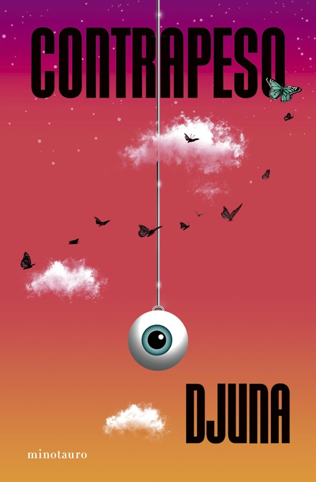

Contrapeso

- Toda tecnología existe en una fina y estrecha red de conocimiento colectivo.
- ★ ¿Acaso convertirse en un dios es algo tan horrible? No lo creo. Desde la aparición de las hachas de piedra, desde el descubrimiento del fuego, la humanidad ha buscado superarse a sí misma. Un hombre con un hacha era como un dios para aquellos que no tenían una. Y si nos fijamos, lo que el presidente pretendía es básicamente una extensión del trabajo de su vida. Lo que, a grandes rasgos, es una extensión natural de ese objetivo de la humanidad de mejorar y superarse.
- Ahora que no puedo leer sus expresiones, solo puedo predecir lo que van a hacer por sus gestos. El programa de IA de Asuntos Exteriores me muestra las posibles rutas que pueden tomar.✎ Tu notaI y si hacemos un libro de decisiones para que puedan seguir sus propias rutas
- menos cuatro implantes, dos de ellos usados como tratamiento para el alzhéimer. Ya había otros métodos mucho más sencillos para tratar esa enfermedad, pero él veía el worm como un nuevo desafío tecnológico. Para cuando falleció, su mente estaba mucho más extendida por la red que la de una persona normal. Y no me refiero simplemente a poder elegir recuerdos y almacenarlos en la nube.
- casi” legal.
- worm
- Fue una experiencia extraña. No era como si simples datos se instalasen en mi mente, como con el worm. Uno a uno, diminutos fragmentos de información se introdujeron en mi cabeza, conectando entre sí, formando como una capa que envolvió mi consciencia. Fui absorbiendo esos datos poco a poco hasta hacerlos míos, y se quedaron en mi cerebro incluso después de que el biorrobot desapareciera. Sentí algo de miedo, pero al mismo tiempo, alivio. Era como tener un ángel de la guarda que me aconsejaba y evitaba que cometiera errores.
- Fue como si mi visión se ampliase y todo se moviera más despacio
- Amaba con locura esos finos cables que conectaban la Tierra con el espacio. El mismo amor que Romeo sentía por Julieta, el que Dante sentía por Beatriz. Comencé a soltar un largo monólogo sobre la estructura, y fue en el idioma del amor. Tal vez lo llevé demasiado lejos. Lo que la empresa necesitaba era un técnico, no un pervertido con un fetiche por objetos. Sin embargo, parece que mi discurso bastó para borrar las sospechas que tenían sobre mí. Era difícil imaginarse que aquel parásito pudiera inyectar semejantes emociones en alguien.
- pues no había nadie que conociese tan bien la estructura geológica de la isla como él. Se decía que, gracias a su experiencia, sabía por intuición un diez por ciento de las incógnitas que la IA aún no puede comprender
- Subrayas la novela como un manual de mente extendida: el worm, la capa de datos que aconseja, el 10 % que la IA no alcanza, y tu propia idea —un libro de decisiones con rutas propias— nacida de un programa que predice caminos.
 Contrapeso Leído · esta hoja평형추 / Counterweight · 2021 · Minotauro Asiático, 17 jun 2026 · trad. Paola Díez Cidoncha · 208 págs
Contrapeso Leído · esta hoja평형추 / Counterweight · 2021 · Minotauro Asiático, 17 jun 2026 · trad. Paola Díez Cidoncha · 208 págsEsta novela. Thriller cyberpunk: ascensor espacial, implantes worm y datos en órbita.
todostuslibros.com · Contrapeso- Everything Good Dies Here Para explorar (EN)Relatos · EN (trad. Adrian Thieret) · Sin edición en castellano verificada
Cuentos del universo Linker y más allá. No hemos verificado una edición en castellano.
Goodreads · Djuna
- La mente se sale del cráneo y entra en la red. El worm no guarda recuerdos «en la nube»: la mente del enfermo «estaba mucho más extendida por la red que la de una persona normal» (nº 2). Luego esa extensión se siente por dentro: los datos no se «instalan», se tejen «como una capa que envolvió mi consciencia» y permanecen cuando el biorrobot desaparece, «un ángel de la guarda que me aconsejaba y evitaba que cometiera errores» (nº 4). El miedo y el alivio llegan juntos. El nº 5 es el efecto sensorial de esa capa: la visión se amplía y el mundo se ralentiza. El fragmento «casi” legal» (nº 3) y la palabra suelta «worm» (nº 7) —así los copiaste— subrayan el implante como objeto técnico, no como metáfora blanda.
- Amar una infraestructura, reservar un 10 % a lo humano. El narrador ama «esos finos cables que conectaban la Tierra con el espacio» con el registro de Romeo y de Dante, «en el idioma del amor» (nº 6). La empresa quiere un técnico; él habla como quien desea un objeto. Frente a ese fetiche de la estructura, el contrapunto humano: hay quien, por experiencia, «sabía por intuición un diez por ciento de las incógnitas que la IA aún no puede comprender» (nº 8). La tecnología no flota sola: «existe en una fina y estrecha red de conocimiento colectivo» (nº 9). Y el salto teológico del nº 10 no es un capricho: desde el hacha de piedra y el fuego, «la humanidad ha buscado superarse a sí misma»; un hombre con hacha era un dios para quien no la tenía. Convertirse en dios, aquí, es la continuidad de ese trabajo.
- Tu nota al nº 1 cierra el arco. La IA de Asuntos Exteriores «muestra las posibles rutas que pueden tomar» a partir de gestos, no de rostros. Tú escribes: «I y si hacemos un libro de decisiones para que puedan seguir sus propias rutas». Es una idea de formación: no solo predecir caminos, sino ofrecer un artefacto —un libro de decisiones, un «elige tu propia aventura»— donde un junior recorra ramificaciones con agencia. La novela muestra una IA que anticipa; tu nota pregunta cómo devolverle al aprendiz la capacidad de elegir la ruta.
- IA como capa y como ángel: el nº 4 plantea el copiloto ideal y su riesgo: alivio de no errar, miedo de ya no ser solo tú. Es el imago de Una memoria llamada imperio , pero inyectado.
- El 10 % humano: el nº 8 da un criterio sobrio para formar y para diseñar sistemas: la intuición de quien conoce el terreno sigue cubriendo lo que el modelo no comprende.
- Formar con rutas: tu nota convierte la predicción (nº 1) en pedagogía ramificada. Un libro de decisiones entrena el juicio, no la obediencia a una sola vía.
- Red colectiva y superación: los nº 9–10 evitan el mito del genio solitario: la técnica es red, y «ser dios» es, en el fondo, ampliar el oficio humano —hacha, fuego, red— no reemplazarlo.
- ❓ Si un sistema te envuelve como «ángel de la guarda», ¿cómo sabes cuándo te está impidiendo el error y cuándo te está impidiendo ver?
- ❓ ¿Cuál es el 10 % que tus juniors deben seguir intuyendo, aunque la IA anticipen las rutas?
- ❓ ¿Cómo sería, en concreto, ese libro de decisiones? ¿Quién escribe las ramificaciones y quién puede salirse del mapa?
- ❓ Cuando dices «superarse», ¿estás ampliando una red de conocimiento colectivo o fabricando un dios privado?
¿Acaso convertirse en un dios es algo tan horrible? No lo creo. Desde la aparición de las hachas de piedra, desde el descubrimiento del fuego, la humanidad ha buscado superarse a sí misma. Un hombre con un hacha era como un dios para aquellos que no tenían una. Y si nos fijamos, lo que el presidente pretendía es básicamente una extensión del trabajo de su vida. Lo que, a grandes rasgos, es una extensión natural de ese objetivo de la humanidad de mejorar y superarse.
Red y dios NÚCLEO
9Toda tecnología existe en una fina y estrecha red de conocimiento colectivo.
10¿Acaso convertirse en un dios es algo tan horrible? No lo creo. Desde la aparición de las hachas de piedra, desde el descubrimiento del fuego, la humanidad ha buscado superarse a sí misma. Un hombre con un hacha era como un dios para aquellos que no tenían una. Y si nos fijamos, lo que el presidente pretendía es básicamente una extensión del trabajo de su vida. Lo que, a grandes rasgos, es una extensión natural de ese objetivo de la humanidad de mejorar y superarse.
Las rutas IA
1Ahora que no puedo leer sus expresiones, solo puedo predecir lo que van a hacer por sus gestos. El programa de IA de Asuntos Exteriores me muestra las posibles rutas que pueden tomar.✎ Tu notaI y si hacemos un libro de decisiones para que puedan seguir sus propias rutas
El worm IMPLANTE
2menos cuatro implantes, dos de ellos usados como tratamiento para el alzhéimer. Ya había otros métodos mucho más sencillos para tratar esa enfermedad, pero él veía el worm como un nuevo desafío tecnológico. Para cuando falleció, su mente estaba mucho más extendida por la red que la de una persona normal. Y no me refiero simplemente a poder elegir recuerdos y almacenarlos en la nube.
3casi” legal.
7worm
El ángel CONSCIENCIA
4Fue una experiencia extraña. No era como si simples datos se instalasen en mi mente, como con el worm. Uno a uno, diminutos fragmentos de información se introdujeron en mi cabeza, conectando entre sí, formando como una capa que envolvió mi consciencia. Fui absorbiendo esos datos poco a poco hasta hacerlos míos, y se quedaron en mi cerebro incluso después de que el biorrobot desapareciera. Sentí algo de miedo, pero al mismo tiempo, alivio. Era como tener un ángel de la guarda que me aconsejaba y evitaba que cometiera errores.
5Fue como si mi visión se ampliase y todo se moviera más despacio
El ascensor DESEO
6Amaba con locura esos finos cables que conectaban la Tierra con el espacio. El mismo amor que Romeo sentía por Julieta, el que Dante sentía por Beatriz. Comencé a soltar un largo monólogo sobre la estructura, y fue en el idioma del amor. Tal vez lo llevé demasiado lejos. Lo que la empresa necesitaba era un técnico, no un pervertido con un fetiche por objetos. Sin embargo, parece que mi discurso bastó para borrar las sospechas que tenían sobre mí. Era difícil imaginarse que aquel parásito pudiera inyectar semejantes emociones en alguien.
El 10 % INTUICIÓN
8pues no había nadie que conociese tan bien la estructura geológica de la isla como él. Se decía que, gracias a su experiencia, sabía por intuición un diez por ciento de las incógnitas que la IA aún no puede comprender
Qué dicen juntos tus 10 subrayados
La mente se sale del cráneo y entra en la red. El worm no guarda recuerdos «en la nube»: la mente del enfermo «estaba mucho más extendida por la red que la de una persona normal» (nº 2). Luego esa extensión se siente por dentro: los datos no se «instalan», se tejen «como una capa que envolvió mi consciencia» y permanecen cuando el biorrobot desaparece, «un ángel de la guarda que me aconsejaba y evitaba que cometiera errores» (nº 4). El miedo y el alivio llegan juntos. El nº 5 es el efecto sensorial de esa capa: la visión se amplía y el mundo se ralentiza. El fragmento «casi” legal» (nº 3) y la palabra suelta «worm» (nº 7) —así los copiaste— subrayan el implante como objeto técnico, no como metáfora blanda.
Amar una infraestructura, reservar un 10 % a lo humano. El narrador ama «esos finos cables que conectaban la Tierra con el espacio» con el registro de Romeo y de Dante, «en el idioma del amor» (nº 6). La empresa quiere un técnico; él habla como quien desea un objeto. Frente a ese fetiche de la estructura, el contrapunto humano: hay quien, por experiencia, «sabía por intuición un diez por ciento de las incógnitas que la IA aún no puede comprender» (nº 8). La tecnología no flota sola: «existe en una fina y estrecha red de conocimiento colectivo» (nº 9). Y el salto teológico del nº 10 no es un capricho: desde el hacha de piedra y el fuego, «la humanidad ha buscado superarse a sí misma»; un hombre con hacha era un dios para quien no la tenía. Convertirse en dios, aquí, es la continuidad de ese trabajo.
Tu nota al nº 1 cierra el arco. La IA de Asuntos Exteriores «muestra las posibles rutas que pueden tomar» a partir de gestos, no de rostros. Tú escribes: «I y si hacemos un libro de decisiones para que puedan seguir sus propias rutas». Es una idea de formación: no solo predecir caminos, sino ofrecer un artefacto —un libro de decisiones, un «elige tu propia aventura»— donde un junior recorra ramificaciones con agencia. La novela muestra una IA que anticipa; tu nota pregunta cómo devolverle al aprendiz la capacidad de elegir la ruta.
Cómo conecta con tus intereses.
- IA como capa y como ángel: el nº 4 plantea el copiloto ideal y su riesgo: alivio de no errar, miedo de ya no ser solo tú. Es el imago de Una memoria llamada imperio , pero inyectado.
- El 10 % humano: el nº 8 da un criterio sobrio para formar y para diseñar sistemas: la intuición de quien conoce el terreno sigue cubriendo lo que el modelo no comprende.
- Formar con rutas: tu nota convierte la predicción (nº 1) en pedagogía ramificada. Un libro de decisiones entrena el juicio, no la obediencia a una sola vía.
- Red colectiva y superación: los nº 9–10 evitan el mito del genio solitario: la técnica es red, y «ser dios» es, en el fondo, ampliar el oficio humano —hacha, fuego, red— no reemplazarlo.
Preguntas para seguir leyendo
- Si un sistema te envuelve como «ángel de la guarda», ¿cómo sabes cuándo te está impidiendo el error y cuándo te está impidiendo ver?
- ¿Cuál es el 10 % que tus juniors deben seguir intuyendo, aunque la IA anticipen las rutas?
- ¿Cómo sería, en concreto, ese libro de decisiones? ¿Quién escribe las ramificaciones y quién puede salirse del mapa?
- Cuando dices «superarse», ¿estás ampliando una red de conocimiento colectivo o fabricando un dios privado?
Otras obras de Djuna
Esta novela. Thriller cyberpunk: ascensor espacial, implantes worm y datos en órbita.
todostuslibros.com · ContrapesoCuentos del universo Linker y más allá. No hemos verificado una edición en castellano.
Goodreads · DjunaEn esta consulta (10 nov 2026) Contrapeso es la única edición en castellano que hemos podido verificar. Djuna tiene más obra en coreano e inglés; no atribuimos títulos españoles no confirmados.